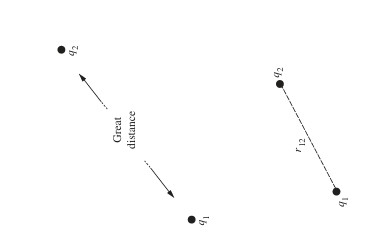
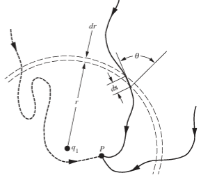
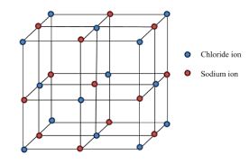
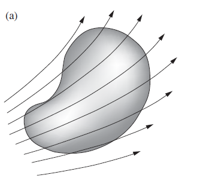
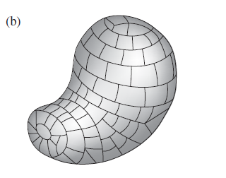
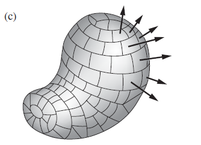
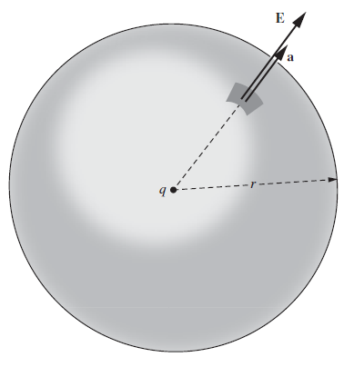
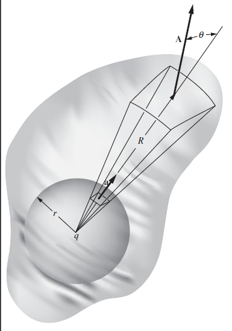

Introduction to Electrodynamics
Electrical Charges
- Classical electromagnetism deals with electricccharges and current and their interaction with each other, as if all the quantities involved could be measured independently with precision. "Classical" simoly means "non-quantum"
- It is observed that all charged particles can be divided into two parts such all members of one class attract each other and other class repel each other, for example if two bodies A and B attract each other, also A attracts C then B and C will repel.
- There exsist two types of charges: Positive and Negative, as opposite manifestation of one quantity, much as right and left are two kind handness.
- The electron is negativly charged, its antiparticle called positron bears a positive charge, but its mass is precisely the same as electron(mass=9.1*10-31kg, charge=-1.6*10-19C). Similarly proton's antiparticle is antiproton, its charge is negative.A electron and proton combines to form a hydrogen atom. In similar sense we can say that positron and antiproton combines to form Anti Hydrogen.
- The building blocks positron, antiproton and antineutrons, there could be built up whole range of antimatter from anti hydrogen to antigalaxies. If electron meets to positron or proton meets anti proton they will quickly vanishes.
- Two properties of electric charge are essential in the electrical structure of matter, charge is conserved as well as quantized. These properties involve quantity of charges and thus implies measuremenr of charge.
Properties of Charges
1. Conservation of Charges
- Total charge is an isloated system is conserved. A beam of photon is made to pass through the system, it doesn't consist of any charge, the electron and positron ejects from the surface. Within the system of charged particles they may vanish or reappear, but they always do so in the pairs of equal and opposite charge.

2. Quantization of Charge
- The charge is quantized means charge exsist as the integral multiple of charge on electron. The charge on electron is denoted as "e".
- Experiment carried oout by J.G. King, hydrogen gas was compressed into tank that was electrically insulated from its surrounding. The tank contained about 5*1024 molecules (approx 17 gram) of hydrogen. The gas was allowed to escape by means that prevented the escape of any ion- a molecule with an electron missing or an electron attached. If the charge of proton differed from the electron by say, about one part in a billion, then each hydrogen molecule will carry a charge of 2*10-9e and the departure of whole mass of hydrogen would alter the charge of tank by 1016e, a gigantic effect. in fact the experiment could have revealed a residual molecular charge as 2*10-20e, and none was observed. This proved the proton and the electron do not differ in magnitude of charge by more than 1 part of 1020.

Coloumb's Law
- Coloumb's law is used to determine the force between two two charge particles.Two stationary electric charges repel or attract each other with a force proportional to product of magnitude of charges and inversely proportional to the sqaure of distance between them.
- in direction from charge 1 to 2. Also the forces obey Newton's Third law. Therefore F2= -F1
- \[k = 8.988 \times 10^9 \,\frac{\mathrm{N \cdot m^2}}{\mathrm{C^2}}\] \[ k = \frac{1}{4\pi \varepsilon_0} \;\Rightarrow\; \varepsilon_0 = \frac{1}{4\pi k} = 8.854 \times 10^{-12} \,\frac{\mathrm{C^2}}{\mathrm{N \cdot m^2}} \;\; \left( \text{or } \frac{\mathrm{C^2 \, s^2}}{\mathrm{kg \, m^3}} \right) \]
\[F_2 = k \frac{q_1 q_2 \vec{r}_{21}}{r_{21}^2}\]
Energy of System of Charges
- Charges are free to move under the influence of other kinds of forces, we can find the equillibrium arrangement in which charge distribution will remain stationary.
- Energy can be the useful concept because electrical forces are conservative in nature.
- First consider the work that must be done on the system to attain a particular arrangement charges. \[ W = \int (\text{applied force}) \cdot (\text{displacement}) \] \[ = \int_{r=\infty}^{r_{12}} \left( -\frac{1}{4\pi \varepsilon_0} \frac{q_1 q_2}{r^2} \right) dr = \frac{1}{4\pi \varepsilon_0} \frac{q_1 q_2}{r_{12}} \]
- Above expression depicts the workdone to make the arrangement of two charges q1 and q2 which are at a distance r12. Infinite is taken as refrence because it at infinity the influence of electrostatic force will be almost zero.
- Let q1 is fixed and q2 was made to move same final position along two different paths. Every spherical shell, such as the one indicated between r and r+dr, must be crossed by both pathways. The increment in work involves, -F.ds in the bit of path, is ame for both paths. The reason is that F has same magnitude at both places and directed radially from q1, while ds=dr/cosθ, hence F.ds=Fdr
- Let us now bring third charge q3 and move it to point P3 whose distance from q1 is r31 and from q2 is r32. Then work required will be; \[W_3 = - \int_{\infty}^{P_3} \mathbf{F}_3 \cdot d\mathbf{s}\] $$ \begin{align*} -\int \mathbf{F}_3 \cdot d\mathbf{s} &= -\int (\mathbf{F}_{31} + \mathbf{F}_{32}) \cdot d\mathbf{s} \\ &= -\int \mathbf{F}_{31} \cdot d\mathbf{s} - \int \mathbf{F}_{32} \cdot d\mathbf{s}. \end{align*} $$
- That is the work required to bring q3 to P3 is the sum of work needed when q1 is present alone and that needed when q2 is present alone. $$W_3 = \frac{1}{4\pi\epsilon_0} \frac{q_1 q_3}{r_{31}} + \frac{1}{4\pi\epsilon_0s} \frac{q_2 q_3}{r_{32}}.$$
- The total workdone in assembling this arrangement of three charges, which we shall call U, therefore: $$U = \frac{1}{4\pi\epsilon_0} \left( \frac{q_1 q_2}{r_{12}} + \frac{q_1 q_3}{r_{13}} + \frac{q_2 q_3}{r_{23}} \right).$$
- One way of writing instructions for the sum over pairs is this: $$ U = \frac{1}{2} \sum_{j=1}^{N} \sum_{k \neq j} \frac{1}{4\pi\epsilon_0} \frac{q_j q_k}{r_{jk}}. $$


Electrical Energy in Crystal Lattice
- Ionic crystal like sodium chloride can be described to very good approximation, as an arrangement of positive ions (Na+ ) and negative ions (Cl-) alternationg a three dimensional array or lattice. In sodium chloride the arrangement is shown:
- We hope to find the potential energy per unit volume or mass of lattice. We confidently expect this is independent of the size of crystal, can have little influence on the other. Two grams of NaCl ought to have twice the potential energy of one gram, and shape should not be important so long as the surface atoms are small fraction of total atoms.
- We would be wrong in this expectation if the crystal were made out of ions of one sign only, then 1g of crystal would carry enormous charge. The situation is saved by the fact that crystal structure is an alternation of equal and opposite charges, so that any microscopic bit of crystal is very nearly neutral.
- To calculate potential energy of lattice, we first observe that every positive ion is in a position equivalent to that of every other positive ion. The arrangement of positive ions around negative ions is exactly same as arrangement of negative ions around positive ions, and so on. Hence we may take one ion as centre, it matters not which kind, sum over its interaction with all others, and simplu multiply by total no.of ions og both kinds. This reduces ouble summation into a single sum and factor N: we must still apply the factor 1/2 to compensate for including each pair twice. Energy of soium chloride lattice composed of total of N ions is: $$U = \frac{1}{2} N \sum_{k=2}^{N} \frac{1}{4\pi\epsilon_0} \frac{q_1 q_k}{r_{1k}}.$$
- Taking positive ion at the centre, our sum runs over all its neighbour near and far. The leading terms start out as follows: $$U = \frac{1}{2}N \frac{1}{4\pi\epsilon_0} \left( -\frac{6e^2}{a} + \frac{12e^2}{\sqrt{2}a} - \frac{8e^2}{\sqrt{3}a} + \cdots \right).$$
- In above expression, first term comes from 6 nearest chlorine ions, at a distance a, the second term from 12 sodium ions on the edges of cube, and so on. It is clear incidentaly that this series doesn't converge absolutely; if we were so foolish as to try to sum all positive trms first, that sum would diverge. To evaluate such sum, we should arrange it so that we proceed outwar, including ever more distant ions, we include them in groups that represent nearly neutral shells of material.


Electric Field

- The electrostatic force is proportional to q, so if we divide out by q we obtain a vector quantity that depends only on the structure of our original system of charges q1,q2,...,qN: and on the position of point (x,y,z). $$\mathbf{E}(x, y, z) = \frac{1}{4\pi\epsilon_0} \sum_{j=1}^{N} \frac{q_j \hat{\mathbf{r}}_{0j}}{r_{0j}^2}.$$
- Perhaps we still want to ask, what is a Electric Field? Is it something real, or is it merely a name for a factor in an equation that has to be multiplied by something else to give the numerical value of the force we measure in an experiment? Two observations may be useful here. First, since it works. it doesn't make any difference. That is not a frivolous answer, but a serious one. Second, the fact that the electric field vector at a point in space is all we need known to predict the force thatvwill act on any charge at that point is by no means trivial.
- If no experiments had ever been done, we could imagine that, in two different situation in which unit charge experience equal forces, test charges of strength 2 units might experence different force, depending upon nature of the other charges in the system. If that were true, the field decription wouldn't work.
The force on some other charge q at (x,y,z) is then:
F = qE
Charge Distributions
- A volume distribution of charge is described by a scalar charge density "ρ" which is a function of position with the dimension charge/volume. That is ρ times a volume element gives the amount of charge contained in that volume element. Thesame symbol is often used for mass per unit volume, but here we shall always give charge per unit volume. If we write ρ as a function of coordinate x,y,z, then ρ(x,y,z)dx.dy.dz is the charge contained in little box, of voulme dxdydz located at point (x,y,z). If the source of electric field is continuous distribution of charges rather than point charges, we replaces the sum with integral. $$\mathbf{E}(x, y, z) = \frac{1}{4\pi\epsilon_0} \int \frac{\rho(x', y', z') \hat{\mathbf{r}}}{r^2} dV'.$$
Flux
- The relation between electric field and its source can be expressed in a much simpler way for which we define a quantity called flux.
- Let us consider some electric field and some aribitary closed surface in the space. Now divide the whole surface into little patches that are so small, over any patch surface is nearly flat and vector field does not change much for that small patch. Let the area of patch has certain magnitutude in square meters, and patch defines a unique direction pointing outward from the surface. Then for every small patch we can define the area vector and the electric field vector.
- Let Ej be the electric field vector at patch number j. The scalar product Ej.aj. We can name this expression as flux through a bit surface. To understand the origin of the name, we can imagine a vector function thatrepresents the velocity of motion of fluid -say in a river, where the velocity varies from one place to another but is constant in time. Denote this vector field by v, measured in m/s.
- The flux of a vector field through a surface is defined as the surface integral of the normal component of the field over that surface. If the field is uniform and the surface is flat, then the flux is simply the product of the field and the area of the surface projected in a plane perpendicular to the field.
- Now let's add up the flux through all the small patches to get flux through entire surface, a scalar quantity denoted by Φ. If the surface is closed, then we call it total flux. If the surface is open, then we call it flux. \[ \Phi = \sum_{\text{all } j} E_j \cdot a_j \]
- Letting the patches become smaller and more numerous without limit, we pass from sum to the surface integral. \[ \Phi = \int_{\text{entire surface}} \mathbf{E} \cdot d\mathbf{a} \]
- A surface integral of any vector function f, over the surface S, means just this: divide S into small patches, each of them represented by a vector outward, of magnitude equal to the patch area, take the scalar product of f with the area vector.



Gauss's Law
- Let us suppose the the field is that of a single positive charge q, and the surface is a sphere of radius r, centred at the point charge. \[ \Phi = E \cdot (\text{total area}) = \frac{q}{4\pi\epsilon_0 r^2}\cdot 4\pi r^2 = \frac{q}{\epsilon_0}. \]
- The flux is indpendent o the shape of sphere shown in the above image.
- Now imagine a second surface, enclosimg the first, but not spherical in shape, we can claim that the total flux through the surface is same as that from sphere.
- To make it feel look at a cone, radiating from q, that cuts a small patch A at a distance R from the charge. The area of patch A is larger than that of the patch a by two factors: first, by ratio of distance squared (R/r)2 and second, owing to its inclination by the factor 1/cosx. The angle x is the angle between the outward normal and the radial direction.
- The electric field in the neighborhood is reduced from its magnitude on the sphere by the factor (r/R)2 and is still radially directed. Letting E(R) be the field at the sphere we have: flux through outer patch = E(R) A cosx flux through inner patch = E(r) a
- Using the above arguments concerning the magnitude of E(R) and the area of A, the flux through the outer patch can be written as: $$E_{(R)} A \cos \theta = \left[ E_{(r)} \left(\frac{r}{R}\right)^2 \right] \left[ a \left(\frac{R}{r}\right)^2 \frac{1}{\cos \theta} \right] \cos \theta = E_{(r)} a,$$

